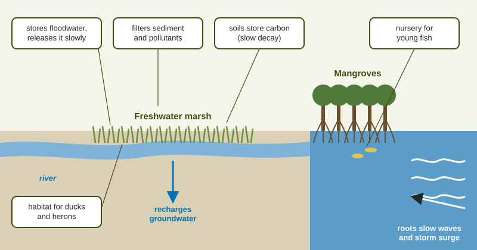

Wetlands are land covered by water for at least part of the year: marshes, swamps, bogs and the mangrove forests of tropical coasts. For a long time people saw them as wasteland to drain. Since the 1780s the lower 48 United States have lost about half of their original wetlands. Scientists now count them among the most valuable ecosystems on Earth for what they do for people.
What wetlands and mangroves do

| Service | How it works |
|---|---|
| Flood control | floodwater spreads out and is stored in the wetland, then released slowly |
| Groundwater recharge | stored water soaks down into aquifers |
| Water filtering | slow water drops its sediment; plants and microbes take up nutrients and trap pollutants |
| Carbon storage | waterlogged, low-oxygen soils decay slowly and store large amounts of carbon |
| Habitat | breeding and resting places for birds; nurseries for young fish and shellfish |
| Coastal protection (mangroves, salt marshes) | dense roots and stems slow waves and storm surge and hold sediment |
How people damage them
- Draining and filling for homes, roads, shopping centers and farm fields.
- Dams and water diversion that cut off the flow that feeds them.
- Pollution from fertilizer and sewage, which can overload them.
- Clearing mangroves for shrimp farm ponds, coastal building and wood.
Wetlands are also home to a large share of rare plants and animals, because so many plants and animals depend on shallow water for part of their lives. When a wetland is lost, its services are lost too: floods rise downstream, more pollution reaches rivers, stored carbon is released as the soil dries and decays, and coastal towns lose their storm buffer.
Worked example: how much water a marsh stores. A 120-hectare marsh holds water 0.5 m deep during a storm. How many cubic meters is that? (1 ha = 10,000 m².)
Setup: . Hectares cancel, and square meters times meters give cubic meters. Answer: of floodwater held back.
Weighing a development decision
Wetland questions often come as a short passage with several voices: a developer who stresses jobs and tax money, neighbors who fear floods, and conservation groups who point to wildlife. Read each claim, then ask what evidence would test it. A claim that a marsh prevents floods is tested by measuring how much water it stores, or by comparing floods before and after a similar marsh was filled. A claim that a marsh is unused assumes that land only has value when people build on it. The strongest answers name the service at stake and say how losing it would change things downstream.
Protecting wetlands
In the United States, filling many wetlands needs a permit under the Clean Water Act. Developers are expected to avoid wetlands where they can, minimize damage, and then offset unavoidable losses by restoring or creating wetland elsewhere (mitigation). Created wetlands often do not match the original's services, which is why avoiding the loss comes first. Other tools include conservation easements that keep land undeveloped, buying wetlands for parks and refuges, and replanting mangroves along vulnerable coasts.